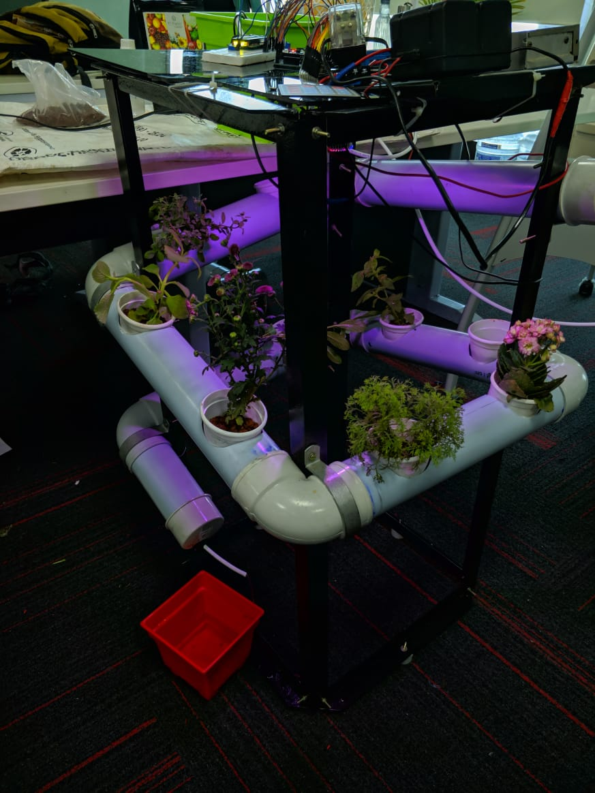
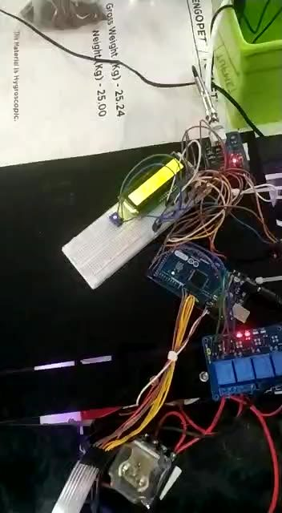
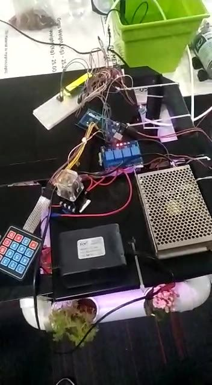

Arduino Mega 2560 · NFT hydroponics
Hydroponinator: a grow rack that looks after itself
A soil-free grow rack with PVC channels, a 12-litre reservoir, grow lights, dosing pumps, a keypad and a 16×2 LCD, and the firmware that keeps the water right. The controller on this page is the real Arduino sketch, compiled unmodified and running against a simulated reservoir: press its keys, speed up time, break its sensors, and watch what it does.
The firmware booting on a virtual Mega. Click the keys, or focus the panel and type: C opens the monitor pages, # flips through them, B switches to manual.
The rig
What the controller switches, what it measures, and where each part is wired.



Wiring, live
parts light up when the controller above switches them onParts and pins
pick one to find itLOW / HIGH is the level that switches the load on: the 4-channel relay board is active-LOW, the transistor drivers active-HIGH. Both are set per channel in config.h, and every pin is parked at its OFF level before it becomes an output, so nothing clicks on while the board boots.
Why the pH keeps climbing
Roots take up nitrate (NO₃⁻) faster than any other ion. To stay electrically neutral they push out bicarbonate and hydroxide, so a healthy crop drives the solution alkaline, a few tenths of a pH unit per day. Above about 6.5, iron and manganese come out of solution and the plants starve with the nutrients sitting in the water. The job of the controller is to add small amounts of acid, often and carefully.
How much acid it takes depends on the buffer: weak acids like phosphate and dissolved CO₂ soak up added H⁺ near their pKa. And CO₂ adds a twist. Acid turns bicarbonate into CO₂, which stays dissolved for a while and then escapes to the air over hours, so the pH drops right after a dose and then creeps back up. Explore it below; the curves come from the same chemistry code the simulator uses.
Titrating the reservoir
12 L tank, 50 mM pH-downWhat the roots can reach
relative nutrient availability used in the growth modelThe plateau between 5.6 and 6.4 is where most crops take up every nutrient they need. The strip underneath is the colour a universal indicator would turn at each pH.
From a glass bulb to a number
A pH electrode is a tiny battery: about −59 mV per pH unit at 25 °C, zero at pH 7. The amplifier board shifts and scales that into 0-5 V for the Mega's 10-bit ADC, where one step is 4.9 mV, about 0.017 pH. The firmware takes a sample every 100 ms, sorts each batch of ten, averages the middle six, and then takes the median of the last five one-second readings, so a single spike never reaches the dosing logic.
Every amplifier board has its own offset and gain, so the conversion to pH comes from a two-point calibration in pH 7 and pH 4 buffers, stored in EEPROM. Move the sliders and follow a reading through the chain.
Reported vs true pH
measured on the simulated board, pH 4.0 to 8.9The factory conversion (3.5 pH per volt, no offset) leaves this board 0.79 pH out, enough to hold the tank near 6.7 while the display says 6.0. After calibration the error is 0.04 pH across the whole range.
The wizard is on the keypad: C, then 0. It only accepts a buffer reading once six consecutive one-second readings agree within 10 mV, rejects a pair whose slope is outside 70-130 % of nominal (mixed-up or exhausted buffers), and stores the result with a CRC-8 so a corrupted EEPROM falls back to safe defaults.
Two more checks protect the tank. A reading pinned to either end of the ADC means an unplugged electrode or a shorted amplifier. And a nutrient tank open to the air cannot sit above about pH 9, so any reading up there is treated as a sensor fault, not as a reason to dose.
Dosing into a lag
Acid lands in one corner of the tank. The pump needs tens of seconds to carry it around, the electrode needs a few more to respond, and the CO₂ released by the acid keeps leaving for hours afterwards. A controller that keeps pumping until the reading changes always pumps too much. This one never chases the reading. It doses, waits, measures, and learns how this particular tank responds.
Corrections start above 6.3 and continue until the tank is back at 6.0, so the pump is not toggled around a single threshold.
Length = (pH − 6.0) ÷ learned response × 0.8. Aiming 20 % short means a wrong estimate undershoots instead of overshooting.
The main pump is forced on so the acid reaches the electrode before anything is judged.
The measured drop per second of pumping is averaged into the estimate. Three doses with no effect lock dosing out and raise an alarm.
Correcting a tank filled with hard tap water
Showing the recorded 3-hour run. Press Run live to run the firmware now with your settings: try a weaker or stronger acid and watch it relearn the response.
A loop that never waits
The Keypad library only sees a key if getKey() runs while the key is down, and a dosing pump left running for an extra second is 20 mL of acid. So the firmware contains no delay() at all. Every job runs on its own timer inside loop(), and the controller decides everything from the readings it is handed, in well under a millisecond.
| job | runs | cost on the Mega |
|---|---|---|
| keypad scan | every pass | ~60 µs |
| pH sample | every 100 ms | 112 µs ADC |
| water level | every 500 ms | 112 µs ADC |
| DHT11 read | every 2 s | ~23 ms (the longest job) |
| controller step | every pass | < 1 ms |
| LCD update | 200 ms, or on a key | 0.25 ms per changed character |
| CSV telemetry | every 5 s | buffered UART, 115200 baud |
| watchdog | every pass | resets the board after 4 s |
How long one pass of loop() takes
one minute while correcting a high pHEvery call to getKey() in 12 seconds
measured live on the simulated board; each tick is one call…
Run the rig
Speed time up, top up the tank, calibrate the probe, break things. Everything below is computed live by the compiled firmware.
Operator
pH probe
To calibrate: untick "perfect pH board", press C, then 0. Put the probe in pH 7, wait for #=OK, press #; repeat with pH 4; put it back in the tank.
Faults
Reservoir
pH, last 48 hours
Water level
air temperature and humidity are in the readings aboveSerial monitor
CSV telemetry the USB port prints every 5 sResults
Every number here comes from python -m hydrolab, which drives the same compiled firmware through scripted scenarios. The growth index is a model output, not a yield prediction.
Held between 6.0 and 6.32 with 21 corrections, about 95 mL of pH-down a day.
16 h of light a day and the 40 W pump cycled for 13.4 h; economy mode cuts both further.
13 doses, lowest point pH 6.0: no overshoot, and within 4 % of the acid the chemistry says is needed.
No acid dosed on a failed amplifier; the pump never ran dry, stopping at 21.8 % water.
Two weeks of reservoir pH
calibrated probe, weekly top-up with tap waterLeft to evaporate
no top-up during a hot spellFaulty probes
6 hours after the fault| fault | acid dosed | alarm after | what the LCD shows |
|---|
A probe frozen at a believable value cannot be told apart from a real reading until a dose fails to move it. The firmware then retries with the smallest pulse and stops after three: 76 mL in total.
Protections built into the firmware
| protection | what it prevents | checked by |
|---|---|---|
Outputs parked OFF before pinMode(OUTPUT); per-channel relay polarity | Pump, lights or acid pump clicking on while the board boots | test_nothing_clicks_on_during_boot |
| Low-water interlock with hysteresis; an unknown level counts as low | A 40 W pump running dry | test_low_water_interlock |
| ADC-rail and plausibility checks on every pH reading | Dosing on a disconnected or saturated probe | test_stuck_probe_is_contained |
| Three unanswered doses lock dosing out until A or D is pressed | Emptying the acid bottle on a frozen probe or an empty bottle | test_no_response_lockout |
| Daily pH-down allowance (40 s of pumping) | Runaway dosing for any reason nobody thought of | test_budget_and_midnight |
| No dosing during calibration or for 30 s after | Dosing on a buffer reading while the probe is out of the tank | test_calibration_blocks_dosing |
| Manual dosing pumps switch themselves off after 10 s | A pump left on by hand | test_manual_dosing_pump_switches_itself_off |
| DHT11 silent for 30 s: fan on, humidifier off, alarm | Humidifying blind in a hot, wet room | test_blind_climate_control_fails_safe |
| Program and calibration in EEPROM with CRC-8; 4 s watchdog | Losing the setup after a power cut or a hang | test_calibration_and_program_survive_a_reset |
No delay(); timed jobs; worst pass ~25 ms | Missed key presses and late pump shut-offs | test_loop_never_blocks |
How the simulation works
firmware/Hydroponics. The sketch is a thin hardware layer; every decision lives in hydro_core, plain C++ with no Arduino calls, unit-tested on a PC.
digitalWrite, analogRead, millis, the LCD, keypad, DHT11, EEPROM and watchdog, each costing the time it costs on a Mega.
Charge balance with phosphate and carbonate, slow CO₂ exchange, two-zone mixing, electrode lag, ADC noise, evaporation, a daily climate cycle and a growth index.
The same C++ is compiled twice: natively for the Python analysis and the test suite, and to WebAssembly for this page. With fused multiply-add disabled and a small deterministic maths library, both builds produce bit-identical results, and a test checks that on every commit.
Tests: 16 groups of host unit tests on the controller (with address and undefined-behaviour sanitizers and a randomised invariant run) and a pytest suite that drives the full sketch on the virtual rig. CI also compiles the sketch for the Mega, where it uses 21.4 KB of flash and 1.7 KB of RAM.
Limits. The reservoir and crop parameters are plausible for a small indoor rig rather than measured, so read the numbers as the controller's behaviour under realistic, repeatable conditions, not as agronomy.
Run it yourself
git clone https://github.com/sundarrajnitish/Automated-Hydroponics-Lab cd Automated-Hydroponics-Lab make -C firmware/test # controller unit tests pip install -r requirements.txt pytest # the sketch on the virtual rig python -m hydrolab # every experiment -> results/ and docs/data/